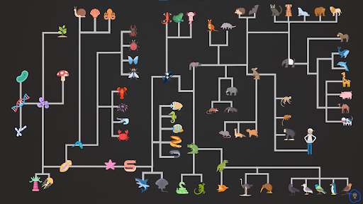
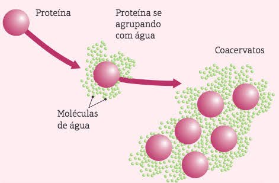
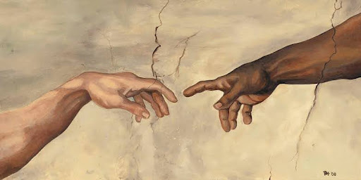
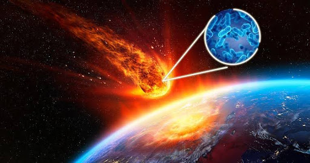
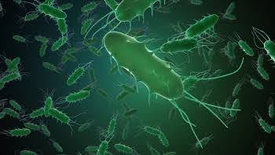

Darwin propôs a teoria da evolução, sugerindo que todas as formas de vida estão conectadas e que novas espécies surgem a partir de outras através de mudanças ao longo do tempo. Ele reuniu evidências de várias áreas, como estudos de distribuição geográfica de organismos, comparações anatômicas, embriologia e fósseis. Hoje, com avanços em genômica, descobrimos semelhanças nos genes e na organização cromossômica de diferentes espécies, o que apoia a ideia de ancestralidade comum e evolução gradual ao longo das gerações.

A imagem acima representa a “árvore da vida”, e nos mostra como toda vida está relacionada e o que evoluiu a partir de quem.
A teoria de Darwin não explica claramente como surgiu a vida, mas algumas outras teorias tentam explicar isso:
Essas são umas das principais teorias que tentam explicar a origem da vida:
Evolução Química:

Esta teoria é a mais aceita pelos cientistas e propõe que a vida começou com o arranjo químico de moléculas simples em condições ambientais favoráveis, formando estruturas metabólicas que podiam se autoduplicar.
A hipótese autotrófica
A hipótese autotrófica sugere que o primeiro ser vivo era autotrófico, produzindo seu próprio alimento. Esta ideia é sustentada pela necessidade de um ambiente favorável e pela instabilidade da atmosfera primitiva, permitindo a nutrição a partir de reações de substâncias inorgânicas, como visto em algumas bactérias modernas.
As primeiras células
Os cientistas acreditam que a primeira célula surgiu há cerca de 3,5 bilhões de anos, com uma estrutura simples formada por uma membrana plasmática e um citoplasma contendo ácidos nucleicos, conhecidos como procariotas. Bactérias e algas azuis são exemplos de descendentes desses primeiros seres vivos.
Criacionismo

O criacionismo é uma crença que afirma que o universo e a diversidade da vida na Terra foram propositadamente concebidos por uma entidade divina ou forças sobrenaturais
Teoria da Panspermia

De acordo com a teoria da Panspermia Cósmica, partículas de vida teriam chegado à Terra trazidas por cometas e meteoros. Essas partículas seriam como esporos prontos para germinar. Acredita-se que essa hipótese tenha sido proposta inicialmente no século V a.C., na Grécia, por Anaxágoras.
Teoria da biogênese

De acordo com a biogênese, todos os seres vivos são originados de outros seres vivos preexistentes. Em outras palavras, um rato só pode nascer de outro rato, e espécies de anfíbios e répteis só podem surgir de espécies preexistentes desses mesmos animais.
fonte
https://www.nature.com/scitable/topics/
https://blog.stoodi.com.br/blog/biologia/origem-da-vida-o-que-e/amp/
https://brasilescola.uol.com.br/amp/biologia/abiogenese-biogenese.htm
https://mundoeducacao.uol.
com.br/amp/historiageral/criacionismo.htm